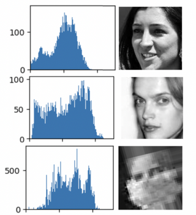

My work
Projects
IC2 Institute DDS Team Website + Dashboard
I developed a full-stack web application with Flask and Dash for the Data Decision Science Team. This website includes a data dashboard for case scenario analysis and modeling for the City of Austin using Plotly and Dash that I both implemented and deployed. The models included polynomial and lineal regression as well as ARIMA forecasting using time-series for multiple variables. All of the variables used in the dashboard are part of the factors in the prosperity index of the city and can visualized as geographical time-series.
For more information visit the website.

Deep learning for face mask classification
Using a dataset: "Face Mask Detection," which contained images of masked (~6,000) and unmasked individuals (~6,000) scraped from Google search and publicly available datasets, we carefully built four CNNs on a diverse dataset of masked faces and then analyzed the results in relation to image features. We performed exploratory data analysis to note gaps in image data of masked individuals, and then trained and validated our models: Sequential (color images), Sequential (grayscale images), VGG16, and InceptionV3. While the Sequential models performed with low accuracy, VGG16 and InceptionV3 proved high accuracy and low loss. VGG16 reached a peak training accuracy of 99.64% and a minimum loss of 0.0104, while InceptionV3 further improved these metrics, nearing 100% accuracy at times and 0% loss without over-or underfitting.

Computing Tool for Lung Damage Diagnosis on VR Interface
The objective of this project was to apply an artificial intelligence technique for lung parenchyma segmentation that allowed 3D visualization in a virtual reality environment for diagnosis. U-Net was used as the architecture of deep learning, and 3D Slicer was used for processing the results. The lung parenchyma was segmented, analyzed and ultimately visualized in a virtual reality environment developed in Unity where radiographic patterns were visible for diagnosis.
This research project was my bachelor's thesis and was developed with the guidance of medical professionals. Video demo available here.

Multivariate extreme event detection on ESDL data cube
In this project, I worked with a multidimensional earth system data lab in order to implement anomaly detection algorithms. To do so, I developed a data processing pipeline and functions that allowed us to then implement seasonality reduction, standardization, time-series analysis and ultimately anomaly detection through Fourier analysis, Kernel Density Estimation, and supervised and unsupervised learning. The reported findings were relevant in the detection and characterization of seasonality in the Colombian tropics.
The development of this project was the result of a proposal award from an Early Adopters Call from the European Space Agency. The findings were presented in Phi-Week 2019 at the ESA's headquarters in Frascati, Italy. For more information, check our report.

Iron Viz Fall 2023
The Iron Viz was a challenge at the end of my data storytelling class at UT Austin. The challenge was to create an original, well-designed dashboard with the specified dataset that tells a story and/or communicates an insight in less than 2 hours. The dataset is from IMDB and is about movies from 1900 to 2022.
For my dashboard I chose to add web-scrapped data regarding movies involved in controversies in order to tell the story of "How forgiving are IMDB ratings to movies involved in controversies?" This dashboard won 3rd place; the juries included experienced data scientists and Tableau developers from Tableau.
Tableau Dashboards
I have developed multiple Tableau dashboards using both publicly available data sources and data provided by local businesses in Austin (from Snowflake or CSV files). These dashboards were developed with the intention of both narrating a story and displaying data for decision making.